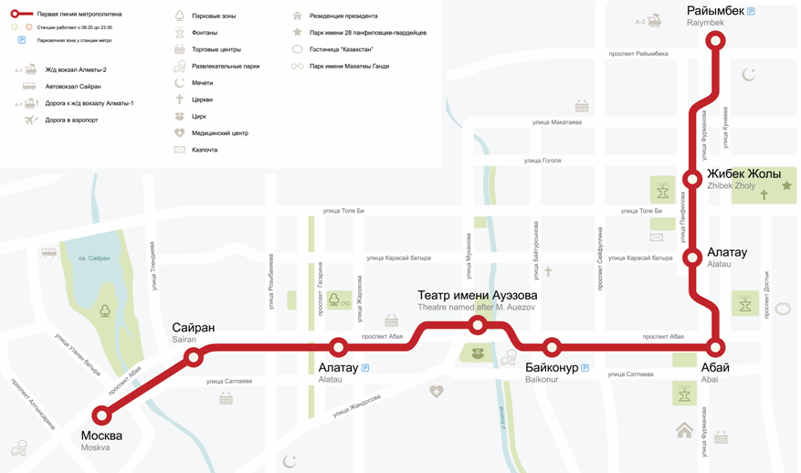

Метро Алматы – один из самых молодых метрополитенов в мире, который был введен в эксплуатацию в 2011 году. Его строительство было начато еще в 1988 году, однако в связи с распадом СССР и существенным экономическим кризисом строительство откладывалось и постоянно переносилось. Сегодня Алматинское метро – единственное в Казахстане и второе в центральной части Азии, уступая лишь метрополитену Ташкента. Оно включает в себя две линии и семь станций. Длина линий – 7,3 км.
Оплатить проезд в метро можно с помощью одноразовых жетонов или специальных электронных смарт-карт многоразового пользования. Срок действия карт составляет 3 месяца. Стоимость проезда в два раза дешевле для детей и подростков от 7 до 15 лет при условии предъявления свидетельства о рождении.
Алматинский метрополитен открыт ежедневно с 6 утра и до 23.30 часов. График работы столичного метрополитена – семь дней в неделю с 5.20 утра до часа ночи. В такие большие праздники, как Рождество, Новый год и Пасха время работы метро обычно продлевается на несколько часов.
